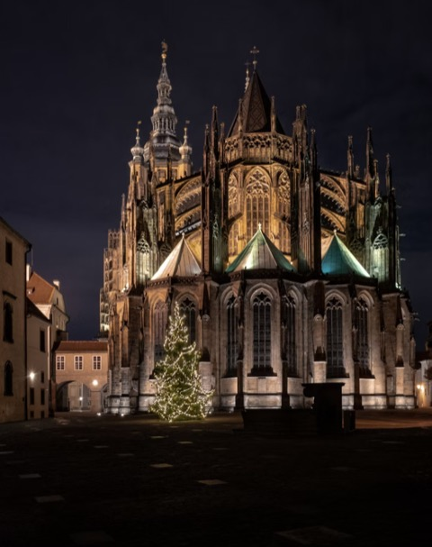

Prag im Winter: zehn Erlebnisse für Genießer – und fünf Mythen im Faktencheck
Oper in einem Haus der Wiener Architekten Fellner & Helmer, ein Mittagskonzert für alle, die abends lieber früh im Hotel sind, der Balkon, von dem aus 1989 die Ausreise der DDR-Flüchtlinge verkündet wurde, und ein Tag in Karlsbad: zehn Erlebnisse für den Prager Winter, mit kurzen Wegen und ohne steile Gassen.

Lesezeit 17 Minuten
Viele meiner Gäste im Winter kennen Prag von früher. Manche kamen in den Siebziger- und Achtzigerjahren aus Dresden, Leipzig oder Karl-Marx-Stadt, als man ohne Visum in die Tschechoslowakei fahren durfte und Prag für viele das Ausland war, das offenstand. Andere kommen aus Zürich, Innsbruck oder dem Salzkammergut und wollen die Stadt einmal ohne Sommerhitze und Reisegruppen sehen.
Im Winter ist Prag eine Stadt der Säle. Oper, Konzerthäuser und Paläste sind geheizt, beleuchtet und gut besucht, und die Wege dazwischen sind kurz. Für diesen Artikel habe ich zehn Erlebnisse ausgewählt, sortiert nach meiner Empfehlung. Zu jedem steht, wie Sie ohne Steigung hinkommen und wie viel Zeit Sie einplanen sollten. Fünf Mythen, nach denen ich im Winter oft gefragt werde, habe ich überprüft. Die Quellen finden Sie am Ende.
„Hier wird von nichts gesprochen als vom Figaro; nichts gespielt, geblasen, gesungen und gepfiffen als Figaro; keine Oper besucht als Figaro und ewig Figaro.“
Wolfgang Amadeus Mozart aus Prag an Gottfried von Jacquin, 15. Januar 1787
Die zehn Erlebnisse im Überblick
Sortiert nach meiner Empfehlung für einige Tage im Advent oder im Januar.
Fünf Mythen im Faktencheck
Die Behauptung, das Ergebnis und das Erlebnis, bei dem Sie die Geschichte zu hören bekommen.
Zwei Opernhäuser: eines aus Wien, eines von Mozart
Die Staatsoper wurde 1888 als Neues Deutsches Theater eröffnet. Gebaut hat sie das Wiener Büro Fellner & Helmer, von dem auch das Volkstheater in Wien, das Opernhaus Zürich und das Stadttheater in Karlsbad stammen. Wer eines dieser Häuser kennt, erkennt die Handschrift sofort. Nach einer mehrjährigen Sanierung öffnete die Staatsoper am 5. Januar 2020 wieder, auf den Tag 132 Jahre nach der ersten Vorstellung mit Wagners „Meistersingern“.
Das Ständetheater in der Altstadt ist gut hundert Jahre älter. Am 29. Oktober 1787 dirigierte Mozart hier die Uraufführung des Don Giovanni, und es ist das einzige erhaltene Theater, in dem er selbst eine Uraufführung geleitet hat. Wie sehr Prag ihn feierte, beschreibt er im Januar 1787 selbst, in dem Brief, aus dem das Zitat oben stammt. Don Giovanni steht bis heute auf dem Spielplan. Den Saal kennen Sie vielleicht aus „Amadeus“: Miloš Forman drehte hier die Opernszenen.
„Mozart schrieb die Ouvertüre erst in der Nacht vor der Premiere.“
Die Geschichte geht auf Erzählungen seiner Witwe Constanze zurück: Mozart habe die Ouvertüre in der Nacht vor der Uraufführung geschrieben, sie habe ihn mit Punsch und Geschichten wach gehalten, und das Orchester habe sie am Abend vom Blatt gespielt. Beweisen lässt sich das nicht. Mozart trug die Oper aber am 28. Oktober 1787 in sein eigenhändiges Werkverzeichnis ein, einen Tag vor der Premiere. Dass die Ouvertüre als Letztes fertig wurde, gilt deshalb als gut möglich.
Rudolfinum: wo Dvořák das erste Konzert der Philharmonie dirigierte
Das Rudolfinum am Moldauufer wurde 1885 eröffnet und nach Kronprinz Rudolf benannt, dem Sohn von Kaiser Franz Joseph und Kaiserin Elisabeth. Entworfen haben es Josef Zítek und Josef Schulz. Am 4. Januar 1896 dirigierte Antonín Dvořák hier das erste Konzert der Tschechischen Philharmonie. Der große Saal trägt heute seinen Namen, und das Orchester spielt bis heute in diesem Haus.
Zwischen 1919 und 1939 tagte hier das Abgeordnetenhaus der Tschechoslowakei. Heute ist das Rudolfinum wieder ein Haus für Musik und Kunst, mit einer Galerie für Gegenwartskunst. Auf der Brüstung des Dachs stehen Statuen von Komponisten, und um eine davon dreht sich eine Geschichte, die man Ihnen in Prag bestimmt erzählt.
„Die Besatzer ließen Mendelssohn vom Dach holen und erwischten fast Wagner.“
Die Geschichte geht so: Im besetzten Prag sollte die Statue des jüdischen Komponisten Felix Mendelssohn Bartholdy vom Dach des Rudolfinums verschwinden. Die Arbeiter wussten nicht, welche Figur er war, und hielten sich an die größte Nase. Sie gehörte Richard Wagner. Die Szene stammt aus dem Roman „Mendelssohn ist auf dem Dach“ von Jiří Weil, der die Besatzung als Jude im Versteck überlebte. Das Buch erschien 1960, ein Jahr nach seinem Tod. Dass es sich genau so zugetragen hat, ist nicht belegt.
Gemeindehaus: der Jugendstilsaal, in dem 1918 die Republik begann
Das Gemeindehaus, tschechisch Obecní dům, wurde 1912 neben dem Pulverturm eröffnet, dort, wo im Mittelalter der Königshof der böhmischen Herrscher stand. Die Stadt baute es als Haus für Konzerte, Bälle und Vereine, und fast alle bekannten tschechischen Künstler der Zeit arbeiteten daran mit. Den Bürgermeistersaal malte Alfons Mucha aus. Am 28. Oktober 1918 wurde hier die Unabhängigkeit der Tschechoslowakei ausgerufen.
Im Smetana-Saal spielen die Prager Symphoniker. Die übrigen Säle mit dem Bürgermeistersaal von Mucha sehen Sie bei einer Führung. Im Erdgeschoss liegen ein Kaffeehaus und ein französisches Restaurant, beide im Jugendstil eingerichtet.
Lobkowicz-Palast: Beethovens Mäzen und ein Konzert zur Mittagszeit
Im Areal der Prager Burg gehört genau ein Gebäude einer Privatfamilie: der Lobkowicz-Palast am östlichen Ende. 1939 beschlagnahmten ihn die Nationalsozialisten, 1948 enteigneten die Kommunisten die Familie, nach 1989 bekam sie ihn zurück. Heute zeigt sie dort in 22 Räumen ihre Sammlung. Darunter ist die „Heuernte“ von Pieter Bruegel dem Älteren aus dem Jahr 1565, eines von fünf erhaltenen Bildern seines Monatszyklus.
Fürst Joseph Franz Maximilian Lobkowicz war einer der wichtigsten Förderer Beethovens. Ihm sind die Eroica, die Fünfte und die Sechste Sinfonie gewidmet, außerdem Haydns Lobkowitz-Quartette. In den Vitrinen liegen Noten mit Anmerkungen von Beethovens Hand und Mozarts Bearbeitung von Händels „Messias“. Jeden Tag um 13 Uhr spielen Musiker, darunter Mitglieder der Tschechischen Philharmonie, eine Stunde lang im barocken Konzertsaal des Palastes, mit Werken von Vivaldi, Mozart, Beethoven und Dvořák.
Das Konzert dauert eine Stunde. Danach bleibt Zeit für das Café des Palastes, von dessen Balkon Sie über die Kleinseite sehen, und Sie sind lange vor der Dunkelheit zurück im Hotel.
Palais Lobkowicz auf der Kleinseite: der Balkon von 1989
Der Name Lobkowicz steht in Prag an zwei Palästen. Der zweite liegt unten auf der Kleinseite, ein Barockpalais am Hang des Petřín. Seit 1974 ist er die Botschaft der Bundesrepublik Deutschland. Im Spätsommer und Herbst 1989 kletterten Tausende DDR-Bürger über den Zaun in den Garten und harrten dort wochenlang aus, in Zelten, im Schlamm und in immer kälteren Nächten.
Am Abend des 30. September 1989 trat Bundesaußenminister Hans-Dietrich Genscher auf den Balkon und sagte, er sei gekommen, um ihnen mitzuteilen, dass heute ihre Ausreise möglich geworden sei. Das Ende des Satzes ging im Jubel unter. Die Sonderzüge fuhren über Dresden in den Westen. Im Garten steht heute ein Trabant auf Beinen, die Skulptur „Quo vadis“ von David Černý aus dem Jahr 1990. Sie sehen ihn vom Weg am Petřín aus durch den Zaun.
Strahov-Bibliothek: Maulbertsch an der Decke, Regale aus Znaim
Das Prämonstratenserkloster Strahov wurde 1143 gegründet und liegt oberhalb der Burg auf dem Hradschin. Seine Bibliothek hat zwei Säle. Den Theologischen Saal baute Giovanni Domenico Orsi 1671 bis 1674, die Deckenfresken malte später Siard Nosecký, selbst Mitglied des Ordens. Der Philosophische Saal entstand Ende des 18. Jahrhunderts, 32 Meter lang und 14 Meter hoch. Seine Regale aus Nussholz stammen aus Klosterbruck bei Znaim, einem Kloster, das Kaiser Joseph II. aufgelöst hatte. Das Deckenfresko malte 1794 Franz Anton Maulbertsch, geboren in Langenargen am Bodensee und einer der großen Maler des österreichischen Barock. Er war damals fast 70 Jahre alt.
Die Säle sehen Sie von der Tür aus, hinter einer Absperrung. Das reicht, um das Fresko zu sehen, und der Besuch dauert nur eine halbe Stunde. In der Wunderkammer im Gang dazwischen liegen ein Narwalzahn und die Überreste eines Dodos. Danach können Sie im Klosterhof in der Klosterbrauerei zu Mittag essen.
Advent in Prag: Märkte, Hirtenmesse und der Karpfen in der Wanne
Der bekannteste Weihnachtsmarkt steht auf dem Altstädter Ring, mit einem großen Baum vor der Teynkirche. Er öffnet Ende November und bleibt bis Anfang Januar. Tagsüber ist er voll, und an den Ständen kaufen vor allem Touristen. Prager gehen lieber auf den Markt am Náměstí Míru, dem Friedensplatz in Vinohrady, vor der neugotischen Ludmilakirche. Er ist kleiner, und Sie hören dort mehr Tschechisch als Englisch.
Am Abend lohnt sich der Weg in eine Kirche. Im Advent und zwischen den Feiertagen wird in vielen Prager Kirchen die Böhmische Hirtenmesse von Jakub Jan Ryba gesungen, 1796 komponiert und den meisten Tschechen von Kindheit an vertraut. Die Geschenke bringt in Tschechien wie in Österreich das Christkind, am Abend des 24. Dezember. Und am 5. Dezember ziehen Nikolaus, Engel und Teufel durch die Altstadt.

„Die Tschechen halten den Weihnachtskarpfen in der Badewanne.“
Ab Mitte Dezember stehen in Prag an Straßenecken große Bottiche mit lebenden Karpfen. Gebackener Karpfen mit Kartoffelsalat ist das klassische Essen am Heiligabend. Viele lassen den Fisch heute gleich am Stand töten, aber manche Familien nehmen ihn lebend mit nach Hause und halten ihn bis zum 24. in der Badewanne. Manche lassen ihn danach sogar wieder frei.
La Degustation: die böhmische Küche der Monarchie, neu gekocht
1894 erschien die „Kuchařská škola“ von Marie B. Svobodová, eine Kochschule der bürgerlichen Küche Böhmens zur Zeit der Monarchie, am Ende über 900 Seiten stark. Als Oldřich Sahajdák und sein Team das La Degustation Bohême Bourgeoise in der Haštalská-Straße eröffneten, legte er dieses Buch auf den Tisch: Danach werde hier gekocht. Dabei ist es geblieben, mit heutigen Techniken und Zutaten aus der Region. 2012 bekam das Restaurant einen Michelin-Stern.
Vieles auf dem Menü wird Ihnen bekannt vorkommen, wenn Sie in Wien, Graz oder Innsbruck aufgewachsen sind, denn die bürgerliche Küche Böhmens und die Wiener Küche haben sich lange gegenseitig geprägt. Es gibt Menüs unterschiedlicher Länge. Wer nicht spät essen möchte, reserviert früh am Abend und wählt das kürzere.
„Böhmische Küche, das sind Knödel und Schweinebraten.“
Knödel und Schweinebraten gibt es, aber die Küche, die Svobodová 1894 beschrieb, war eine bürgerliche Küche nach Wiener und französischem Vorbild. In ihrem Buch stehen Rezepte für Schildkrötensuppe und gebackene Wassermelone, und ein ganzer Abschnitt erklärt, wie man in der Küche nichts wegwirft. Manches, was heute als Wiener Küche gilt, etwa Buchteln oder Powidltascherl, kam aus Böhmen nach Wien.
Spa im Mandarin Oriental: Ruhe in einer ehemaligen Kapelle
Das Mandarin Oriental auf der Kleinseite liegt in einem ehemaligen Dominikanerkloster aus dem 14. Jahrhundert. Sein Spa ist in der früheren Renaissancekapelle untergebracht. Beim Umbau kamen darunter die Fundamente einer noch älteren gotischen Kirche zum Vorschein. Sie liegen heute unter einem Glasboden, über den Sie zur Behandlung gehen, und ein unterirdischer Gang mit Vitrinen voller Funde aus der Grabung verbindet das Spa mit dem Hotel.
Behandlungen können Sie auch buchen, wenn Sie nicht im Hotel wohnen. Nach einem Vormittag auf dem Kopfsteinpflaster ist eine Massage am frühen Nachmittag eine gute Pause. Das Hotel liegt ruhig zwischen dem Petřín und der Insel Kampa, abseits der Hauptwege.
Karlsbad: eine Kur wie zu Goethes Zeiten
Goethe kam dreizehnmal zur Kur nach Karlsbad. Seit 2021 gehört die Stadt mit Marienbad und Franzensbad zum UNESCO-Welterbe der „Bedeutenden Kurstädte Europas“, zusammen mit Baden-Baden, Baden bei Wien und sechs weiteren Kurorten. Die Mühlbrunnkolonnade an der Teplá entwarf Josef Zítek, der Architekt des Rudolfinums. Das Stadttheater stammt von Fellner & Helmer wie die Prager Staatsoper, den Vorhang malten Gustav und Ernst Klimt mit Franz Matsch.
Getrunken wird aus dem Kurbecher, dessen Henkel zugleich Trinkhalm ist, langsam und im Gehen, wie es in Karlsbad seit dem 19. Jahrhundert üblich ist. Die großen Kurhotels bieten auch mehrtägige Kuren mit ärztlicher Untersuchung an. Für einen Tag reicht es, die Kolonnaden entlangzugehen, an zwei, drei Quellen zu kosten und im Kaffeehaus Karlsbader Oblaten zu essen.
„Karl IV. entdeckte die heiße Quelle auf der Jagd.“
Der Legende nach jagte Karl IV. in den Wäldern an der Teplá einen Hirsch. Einer seiner Hunde stürzte in eine heiße Quelle und jaulte auf, und der Kaiser ließ an der Stelle ein Bad anlegen. In manchen Fassungen springt der Hirsch selbst. Belegt ist nur, dass Karl IV. dem Ort 1370 Stadtrechte verlieh. Wann die Quellen zum ersten Mal genutzt wurden, weiß niemand.
Ohne Bergauf: praktische Hinweise für den Winter
Viele meiner Gäste sind über 65, und fast alle merken am ersten Tag, dass Prag hügeliger ist, als der Stadtplan vermuten lässt. Im Winter kommen Glätte und frühe Dunkelheit dazu. Diese Hinweise gebe ich allen, die mit mir unterwegs sind.

- Ab 65 fahren Sie kostenlos. Metro, Straßenbahn und Bus kosten in Prag ab 65 Jahren nichts. Sie brauchen keinen Fahrschein, aber einen amtlichen Ausweis mit Foto und Geburtsdatum.
- Oben anfangen. Fahren Sie mit der Tram 22 oder 23 zur Burg oder nach Strahov und gehen Sie von dort bergab.
- Taxi per App. Bestellen Sie Taxis per App, dann steht der Preis vorher fest. Abends nach der Oper ist das bequemer als die Metro.
- Schuhe mit Profil. Kopfsteinpflaster ist bei Nässe und Frost glatt. Feste Schuhe mit Profil, die Sie schon getragen haben, sind das Wichtigste im Gepäck.
- Garderobe einplanen. In Theatern und Konzertsälen geben Sie den Mantel an der Garderobe ab. Planen Sie dafür vor Beginn und nach dem Ende ein paar Minuten ein.
- Feiertage. Am 24. Dezember schließen größere Geschäfte um 12 Uhr, am 25. und 26. Dezember und am 1. Januar bleiben sie zu. Restaurants und Museen haben an diesen Tagen eigene Öffnungszeiten, fragen Sie vorher nach.
- Kronen, nicht Euro. Bezahlt wird in Kronen. Karten werden fast überall akzeptiert. Euro oder Franken nehmen manche Geschäfte, aber zu schlechtem Kurs.
Häufige Fragen
Ist Prag im Winter für ältere Reisende geeignet?
Ja, wenn Sie die Wege gut planen. Oper, Konzerthäuser, Paläste und Museen sind geheizt und geöffnet. Ab 65 fahren Sie kostenlos mit Metro, Straßenbahn und Bus, und mit der Tram kommen Sie ohne Aufstieg bis an die Burg.
Wie komme ich ohne steile Wege zur Prager Burg?
Mit der Tram 22 oder 23 bis zur Haltestelle Pražský hrad. Von dort gehen Sie über die Pulverbrücke fast eben in die Burghöfe.
Gibt es in Prag Konzerte am Nachmittag?
Ja. Im Lobkowicz-Palast auf der Prager Burg beginnt jeden Tag um 13 Uhr ein einstündiges Konzert mit klassischer Musik.
Kann man von Prag aus einen Tag nach Karlsbad fahren?
Ja. Mit dem Auto oder Fernbus dauert die Fahrt rund zwei Stunden. Die Kolonnaden liegen nah beieinander und sind eben verbunden.
Wann sind die Prager Weihnachtsmärkte geöffnet?
Von Ende November bis Anfang Januar. Der größte steht auf dem Altstädter Ring, ein kleinerer und ruhigerer auf dem Náměstí Míru in Vinohrady.
Gibt es Stadtführungen auf Deutsch für Senioren?
Ja. Ich führe privat und auf Deutsch, in Ihrem Tempo, und lege die Route so, dass Sie keine Treppe steigen müssen, die Sie nicht steigen wollen.
Wenn Sie Prag im Winter lieber mit jemandem erleben, der die Wege kennt und die Geschichten dazu erzählt: Ich führe privat und auf Deutsch, plane Konzerte und Pausen mit ein und richte das Tempo nach Ihnen.
Quellen
- Národní divadlo: Nationaltheater, Staatsoper und Ständetheater; Wikipedia: Prague State Opera, Fellner & Helmer
- Prague City Tourism: Estates Theatre; Wikipedia: Mozart and Prague
- Česká filharmonie: Tschechische Philharmonie; Wikipedia: Rudolfinum, Jiří Weil
- Obecní dům: Gemeindehaus Prag
- Lobkowicz Collections: Lobkowicz-Palast; Prague Classical Concerts: Pearls of Classical Music – Lobkowicz Palace; Wikipedia: The Hay Harvest
- Deutsche Botschaft Prag: prag.diplo.de
- Strahovský klášter: Website des Klosters Strahov; Eurolandmarks: Strahov Monastery Library: Tickets & Opening Hours 2026
- Wikipedia: Czech Christmas Mass (Jakub Jan Ryba)
- La Degustation Bohême Bourgeoise; Czech Bites: The book documenting Michelin restaurant La Degustation; Expats.cz: Restaurant named for cookbook pioneer opens in Prague
- VisitCzechia: Mandarin Oriental Hotel in Prague
- UNESCO: The Great Spa Towns of Europe; Stadt Karlsbad: karlovyvary.cz
- Prague City Tourism: Public transport (Fahrpreise und Ermäßigungen)
- Wolfgang Amadeus Mozart: Brief an Gottfried von Jacquin, Prag, 15. Januar 1787